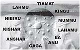

|

|
Nasza wspó³czesna, "wyzwolona" nauka podjê³a siê trudu wyt³umaczenia nam maluczkim jak
powsta³ Wszech¶wiat, a niejako przy okazji nasz Uk³ad S³oneczny i nasza
Ziemia. Obowi±zujac± teoriê Ptolemeusza, ¿e Ziemia jest centrum Wszech¶wiata,
uznawan± przez Ko¶ció³, zaczêto g³o¶no podwa¿aæ ju¿ u schy³ku ¶redniowiecza. Wschodz±ca
hipoteza od pocz±tku naznaczona by³a piêtnem ¶mierci. ¦wiêta Inkwizycja, stra¿nik
nauki ko¶cio³a, tropi³a nieprawomy¶lnych i w przyspieszonym trybie wysy³a³a ich do Stwórcy.
Autor nowego, heliocentrycznego uk³adu Miko³aj Kopernik uszed³ z ¿yciem ¿andarmom
Torquemady tylko dlatego, ¿e odszed³ wcze¶niej z tego ¶wiata w naturalny sposób.
Ponad 4,5 miliarda lat temu, w jednym z licznych galaktycznych ob³oków materii
miêdzygwiazdowej, zaczê³o siê tworzyæ zgêszczenie. W chaosie pojawi³ siê ruch o
charakterze swobodnego spadku ku gêstszemu obszarowi. Byc mo¿e przyczyn± by³ wybuch
supernowej. W pierwotnym ob³oku istnia³ wodór, hel i niewielkie ilo¶ci atomów ciê¿szych
pierwiastków w postaci py³u. Z bezkszta³tnego ob³oku materii miêdzygwiazdowej
zacz±³ tworzyæ siê kulisty twór - Protos³oñce.
Dziwne jest dla mnie to, dlaczego pomija siê
ca³± grupê pierwiatków ciê¿kich w tym pierwiastki radioaktywne. Nie by³o ich wcale?
Powsta³y du¿o pó¼niej? Czy pomija
siê je, bo nie pasuj± do hipotezy? Skoro S³oñce by³o o¶rodkiem grawitacji, dlaczego
z³o¿one jest tylko z najl¿ejszych pierwiastków? Jak siê ma si³a grawitacji atomu wodoru do
grawitacji atomu uranu czy toru? W jakim momencie na Ziemi pojawi³y siê pierwiastki
ciê¿kie? Je¶li nasz Wszech¶wiat uwa¿amy za jednorodn± materiê uwolnion± w Wiekim
Wybuchu, to sk±d takie "dziury" w teorii?
Uk³ad S³oneczny zacz±³ siê tworzyæ
z mg³awicy gazowo-py³owej, kondensowanej coraz szybszym obrotem dooko³a Protos³oñca.
Towarzyszy³o temu skupianie siê ziaren py³u, które zderzaj±c siê zlepia³y w coraz
wiêksze bry³ki. Ich sk³ad chemiczny zale¿a³ od miejsca powstania.
Najbli¿ej Protos³oñca, gdzie panowa³a najwy¿sza temperatura w ziarnach
dominowa³y trudno topliwe metale i krzemiany. Dalej lód i dwutlenek wêgla, najdalej
metan i amoniak.
Dlaczego proces powstawania planet zakoñczy³
siê tak niespodziewanie, skoro budulca
w tzw. pasie Kuipera mo¿e byæ na kilka jeszcze planet? Sk±d przy planetach gazowych
wziê³y siê ksiê¿yce o wiêkszym ciê¿arze w³a¶ciwym? Sk±d siê wzi±³ "budulec planetarny"
w pasie miêdzy Marsem i Jowiszem zamiast znale¼æ siê w Pasie Kuipera, a nawet w s³ynnej
chmurze O'orta?
Sumerowie S³oñce nazywali Apsu, czyli ten,
który istnia³ zawsze. Nie wdawali siê w dywagacje na temat jego powstania (widocznie
ta wiedza nie zosta³a im dana).
Wed³ug ich kosmogonii planety Uk³adu S³onecznego nie powsta³y jednocze¶nie.
Planety powstawa³y parami.

Odb±d¼my wiêc przeja¿d¿kê po naszym
najbli¿szym osiedlu zwanym Uk³adem S³onecznym.
Zaleca³bym du¿± rozwagê i sceptycyzm podczas zapoznawania siê z naukowymi "pewnikami". S±
to hipotezy w ogromnym stopniu wymy¶lone i nie sprawdzone, a tylko niektóre weryfikowane
za pomoc± nielicznej armii próbników, z którymi uda³o siê nawi±zaæ ³±czno¶æ.
Pamiêtaæ te¿ nale¿y, ¿e hierarchia hipotezy jest wprost proporcjonalna do tytu³ów naukowych,
si³y przebicia g³osz±cego je oraz wk³adu w jej public relation.
Proszê siê nie dziwiæ ma³± ilo¶ci± opisów
ksiê¿yców. Opisujê tylko te najwiêksze, kuliste, jedyne lub ciekawe. To mój mini protest
przeciw rozrzutno¶ci i nonszalancji astronomów w ich okre¶laniu.
Dos³ownie byle gówno, które tylko okr±¿a planetê, natychmiast dostêpuje zaszczytnego
miana ksiê¿yca. St±d te dziwol±gi w rodzaju K13/cosiktam/XXI-s500. £atwo zapamiêtaæ
prawda? Jak ju¿ dojdziemy do opisu okazuje siê, ¿e to tylko 500-metrowy nieforemny,
skalisty kawa³ek kosmicznego "ziemniaka" w dodatku niewiadomego pochodzenia.
Strach pomy¶leæ, ile tego bêdzie, gdy nowocze¶niejsze sondy kosmiczne czy super
teleskopy zaczn± wykrywaæ obiekty wielko¶ci ziarnka piasku.
|

|
MERKURY |
 |
Minimalna odleg³o¶æ od S³oñca (w mln km) Maksymalna odleg³o¶æ od S³oñca (w mln km) ¦rednia odleg³o¶æ od S³oñca (w mln km) Prêdko¶æ orbitalna (km/sek) Okres obiegu dooko³a S³oñca Okres obrotu wokó³ w³asnej osi ¦rednica równika (km) Promieñ równikowy (km) Promieñ biegunowy (km) K±t nachylenia osi obrotu Masa planety (Ziemia=1) Objêto¶æ planety (Ziemia=1) Gêsto¶æ planety (Woda=1) ¦rednia temperatura na powierzchni chmur (°C) Ci¶nienie atmosferyczne na powierzchni (mB) Przyspieszenie si³y ciê¿ko¶ci (Ziemia=1) Atmosfera Wewnêtrzne ¼ród³o ciep³a W³asne pole magnetyczne Dzia³alno¶æ wulkaniczna, burze atmosferyczne Liczba znanych ksiê¿yców |
- 45,9 - 69,7 - 57,9 - 47,9 - 88 dni - 59 dni - 4880 - 2440 - 2440 - poni¿ej 1° - 0,055 - 0,06 - 5,4 - +427(D),-183(N) - nieznaczne - 0,37 - ? - nie - tak - nie, nie - 0 |
Planeta najbli¿sza S³oñcu. Amerykañska sonda kosmiczna Mariner 10 wykaza³a obecno¶æ pola magnetycznego o sile 1% ziemskiego. Powierzchniê planety gêsto pokrywaj± kratery. Jest to prawdopodobnie cena jak± p³aci Merkury za bliskie s±siedztwo S³oñca, które jest centrum grawitacyjnym ca³ego Uk³adu S³onecznego. Mariner 10 wykry³ te¿ obszar nazwany Coloris Planitia (Równina ¿aru). Jest to najwiêkszy krater spowodowany upadkiem innego cia³a niebieskiego. Ma on ¶rednicê 1300 km. Uderzenie, dziêki któremu powsta³ by³o tak silne, ¿e dok³adnie po przeciwnej stronie planety powsta³o niewielkie wzniesienie! Oko³o 78% Merkurego stanowi kora, z³o¿ona praktycznie wy³±cznie z ¿elaza. Ma ona promieñ 1800-1900 km. Zewnêtrzna skorupa ma grubo¶æ 500-600 km. W niektórych kraterach bieguna pó³nocnego, chroniona przez cienie, wystêpuje zamarzniêta woda. |
Do¶æ ciekawe przypuszczenie. Prawie ¿elazna kula, na której na dodatek nie dochodzi do ¿adnej reakcji ¿elaza z wod±. Istnienie s³abego pola magnetycznego wskazuje byæ mo¿e na jego tworzenie siê we wnêtrzu planety. Nie znamy jednak sk³adu j±dra planety ani jego wielko¶ci.